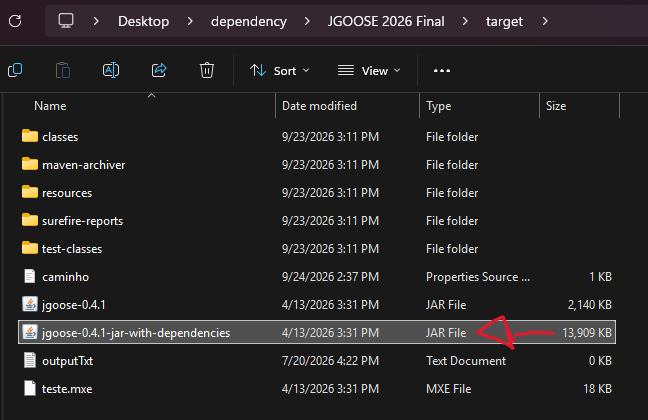
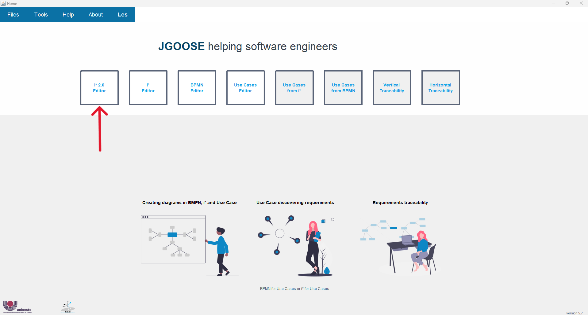
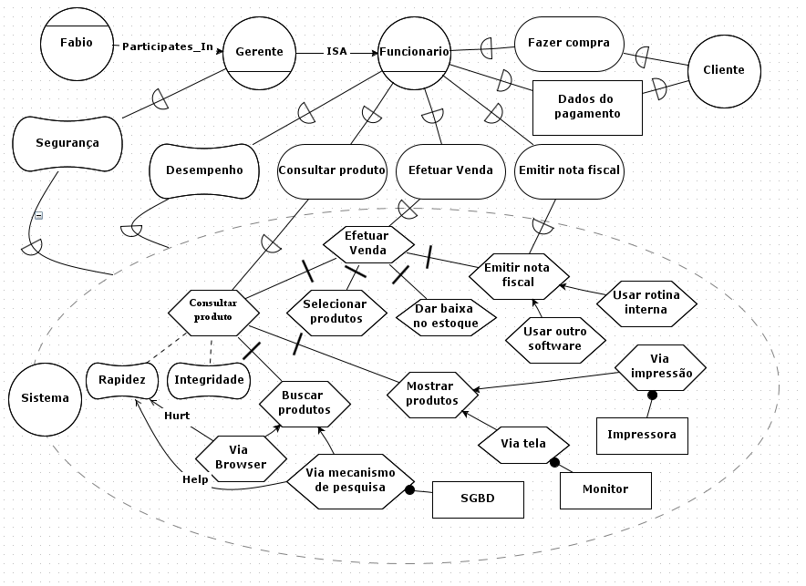

Documento de Instruções - JGOOSE¶
| Autor do Documento | Michel Caesar |
|---|---|
| Última Alteração | 02/10/2026 (pré-teste) |
Sumário¶
- Documento de Instruções - JGOOSE
- Sumário
- Manual de Uso - JGOOSE
- Como executar a JGOOSE? (pule este passo caso já esteja executando a JGOOSE na máquina)
- Como gerar um diagrama iStar
- Incluir e renomear um Ator (Actor), um Agente (Agent) e/ou uma função (Role)
- Salvar em um arquivo o diagrama iStar desenvolvido
- Adicionar um Link de relação ou contribuição
- Quebrar a linha dentro de um Ator ou Elemento de Dependência
- Arrastar mais de 2 elementos na tela ao mesmo tempo
- Duplicar um elemento
- Exercícios para Utilização da JGOOSE
Manual de Uso - JGOOSE¶
Este manual contém, de forma sucinta, uma breve descrição de como utilizar cada funcionalidade da ferramenta JGOOSE, contemplando apenas o escopo de funcionalidades abordadas na seção de Exercícios para Utilização da JGOOSE. Dúvidas adicionais poderão ser sanadas com o avaliador responsável por conduzir este estudo, e que estará presente na sala no momento da aplicação deste instrumento de avaliação.
Como executar a JGOOSE? (pule este passo caso já esteja executando a JGOOSE na máquina)¶
Requisito básico: JRE (Java Runtime Environment) versão 9 ou superior instalado na máquina.
Execute o arquivo “jgoose-VERSAO-jar-with-dependencies.jar” conforme consta na imagem abaixo.

Como gerar um diagrama iStar¶
Estando na tela inicial, acesse a opção “i* 2.0 Editor”.

Incluir e renomear um Ator (Actor), um Agente (Agent) e/ou uma função (Role)¶
Para incluir um Ator (Actor), um Agente (Agent) e/ou uma função (Role), clique com o mouse no respectivo ícone e arraste com o mouse até o espaço à direita. Para renomear, clique 2 vezes em cima do respectivo ator, digite o nome e aperte Enter.
Salvar em um arquivo o diagrama iStar desenvolvido¶
Clique no ícone de disco (ou aperte simultaneamente Ctrl e S), escolha o nome do arquivo e o salve com extensão “.mxe”. Após isso, sempre que você apertar simultaneamente Ctrl e S ou clicar no ícone de disco, suas alterações serão salvas no respectivo arquivo.
Adicionar um Link de relação ou contribuição¶
Clique com o mouse no respectivo ícone do link, arraste-o para o respectivo ator ou elemento de origem. Em seguida, clique no respectivo ator ou elemento de origem e arraste-o para o respectivo ator ou elemento de destino.
Quebrar a linha dentro de um Ator ou Elemento de Dependência¶
No local onde deseja inserir a quebra de linha, aperte simultaneamente as teclas Shift e Enter.
Arrastar mais de 2 elementos na tela ao mesmo tempo¶
Segure o mouse principal e selecione uma área retangular em volta dos elementos que deseja mover. Em seguida arraste o mouse para mover os itens selecionados.
Duplicar um elemento¶
Clique sobre o elemento, aperte simultaneamente Ctrl e C, depois Ctrl e V para duplicar o elemento.
Exercícios para Utilização da JGOOSE¶
Nesta seção descreve-se a sequência de passos a serem seguidos. O objetivo é fazer com que o participante da pesquisa utilize a JGOOSE no que concerne ao seguinte escopo de funcionalidades:
- Geração de Diagrama iStar.
- Mapeamento iStar -> Casos de Uso.
- Exportação de um Caso de Uso.
- (?) Importação de um Caso de Uso.
- (pendente) Adição de um Caso de Uso.
- Mapeamento Casos de Uso -> iStar.
Dúvidas adicionais que surgirem durante a resolução dos exercícios poderão ser sanadas com o avaliador responsável por conduzir este estudo, e que estará presente na sala no momento da aplicação deste instrumento de avaliação.
Utilizando o Editor i* 2.0 presente na JGOOSE, utilize-o para desenvolver o diagrama iStar conforme consta na imagem abaixo.

Utilizando a JGOOSE, mapeie o diagrama iStar que você desenhou para Casos de Uso. Considere o ator “Sistema”. Abra a tela para visualizar os Casos de Uso mapeados.
Exporte a descrição do Caso de Uso “Emitir nota fiscal”
Exporte a descrição de todos Casos de Uso gerados.
Abra o arquivo .doc gerado e revise o texto do Caso de Uso “Emitir nota fiscal”.
- Considerar adição de algum exercício que faça o participante tentar aproveitar a descrição textual do caso de uso disponibilizada no arquivo “.doc”.
(?) Altere a descrição do Caso de Uso “Efetuar venda”.
(pendente) Adicione um novo Caso de Uso.
Mapeie os casos de uso para o diagrama iStar.